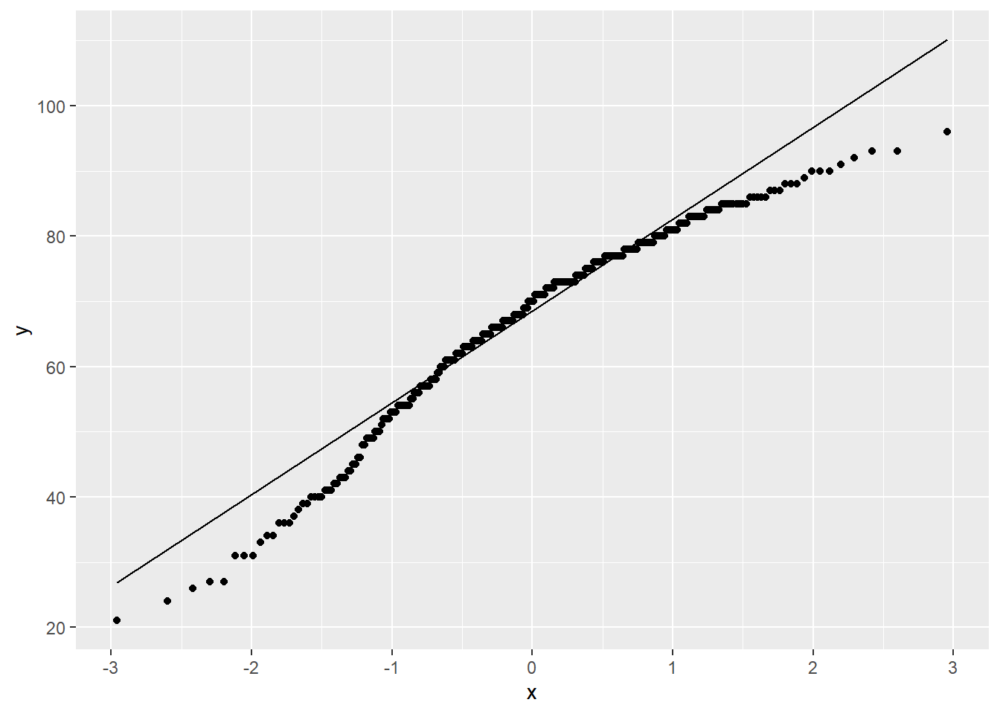
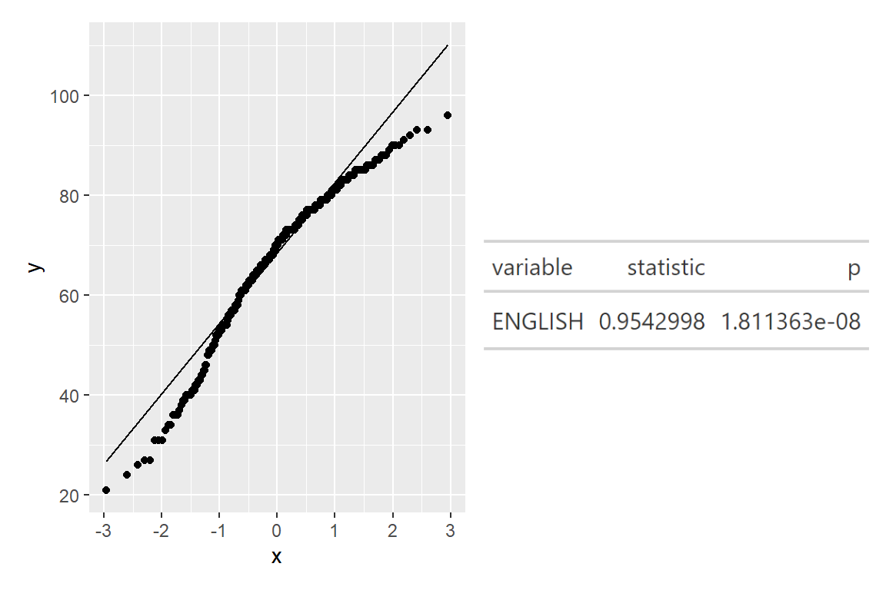
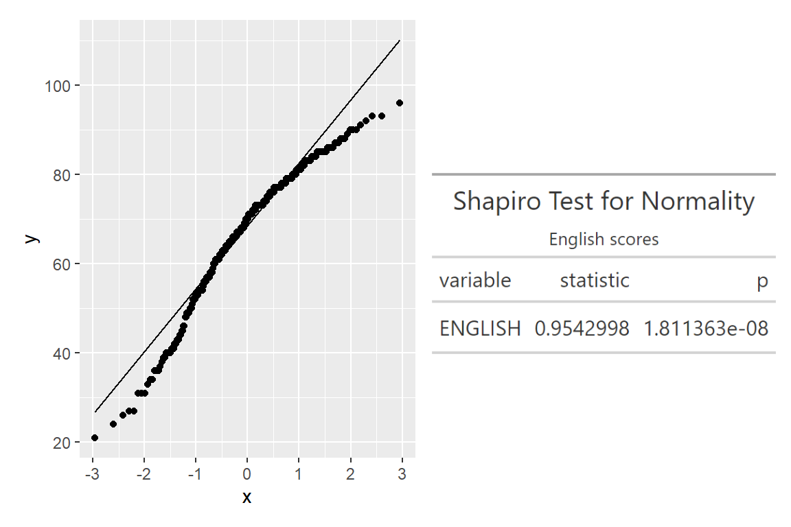

pacman::p_load(rstatix, gt, patchwork,tidyverse,nortest)In-class_Ex04
In today’s in class exercise, Prof shared with us how to combine a qqplot and tabular results of Shapiro test in a single plot.
Import libraries
The new libraries used today are :
rstatic: Allows us to perform basic statistical tests, including t-test, Wilcoxon test, ANOVA, Kruskal-Wallis and correlation analyses.
gt() : starting from a tibble table, customise a table and export in various formats. Most importantly, it works with patch. We will save the tabular results from shapiro test as gt object and export using gtsave() into .png file later.
Note:
Importing tidyverse: will automatically provide read_r() <- for read_csv()
exam <- read_csv('C:/yixin-neo/ISSS608-VAA/Hands-on_Ex/Hands-on_Ex05/data/Exam_data.csv')Background info
The Anderson_darling test
Usually, when we check for normality of a distribution, we can use the Anderson-darling test or the Shapiro test. Hitting the three commands below will give us the results, but no visualisation.
ad.test(exam$ENGLISH)
Anderson-Darling normality test
data: exam$ENGLISH
A = 4.3661, p-value = 7.341e-11The shapiro.test
Using shapiro.test will generate result as a HTML object.
shapiro.test(exam$ENGLISH)
Shapiro-Wilk normality test
data: exam$ENGLISH
W = 0.9543, p-value = 1.811e-08Using shapiro_test will generate result as a tibble object.
exam %>%
shapiro_test(ENGLISH)# A tibble: 1 × 3
variable statistic p
<chr> <dbl> <dbl>
1 ENGLISH 0.954 0.0000000181QQplot
We can also generate the qqplot to check for normality. However qqplot does not print any p-values.
ggplot(exam,
aes(sample=ENGLISH)) + #<<< use a new argument call sample: el scores
stat_qq() +
stat_qq_line()
Task for today:
Combine qqplot with results from Shapiro-test.
Recall that in hands-on 3, we use DT to create an interactive table , however it is not recognized by patchwork.
We start by storing the shapiro test in a tibble table as shown above. Then we will use the gt() package and export it as a .png using gtsave().
qq <- ggplot(exam,
aes(sample=ENGLISH)) + #<<< use a new argument call sample: el scores
stat_qq() +
stat_qq_line()
sw_t <- exam %>%
shapiro_test(ENGLISH) %>% gt() #<<< make into a gt format (will give a nice table) shapiro.test is not used here as it gives output in another format.
tmp <- tempfile(fileext = '.png') # create temp table
gtsave(sw_t, tmp) # use gtsave() to save sw_t into tmp folder
table_png <- png::readPNG(tmp, native = TRUE)
qq+table_png
I tried to customise the gt() table.
qq <- ggplot(exam,
aes(sample=ENGLISH)) + #<<< use a new argument call sample: el scores
stat_qq() +
stat_qq_line()
sw_t <- exam %>%
shapiro_test(ENGLISH) %>% gt() %>%
tab_header(
title = 'Shapiro Test for Normality',
subtitle = 'English scores')
tmp <- tempfile(fileext = '.png') # create temp table
gtsave(sw_t, tmp) # use gtsave() to save sw_t into tmp folder
table_png <- png::readPNG(tmp, native = TRUE)
qq+table_png # use patchwork to stitch
The results of the Shapiro test shows that p-value < 0.05 and we have enough statistical evidence to reject the null hypothesis and conclude that English scores do not follow normal distribution.